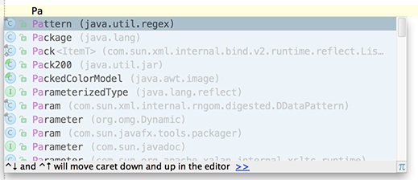

The Code Completion feature lets you quickly complete different kinds of statements in the code. For example, start typing a class name and press &shortcut:CodeCompletion; to complete it. When multiple choices are available, they are shown in the lookup list.
